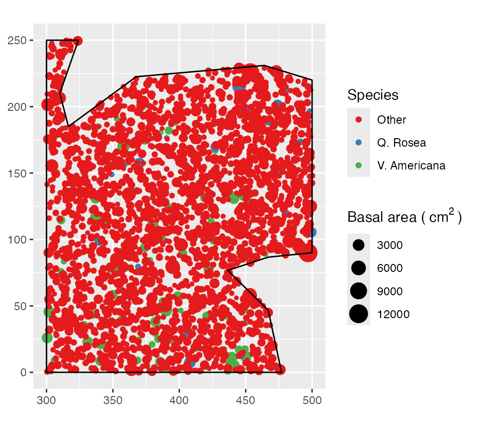
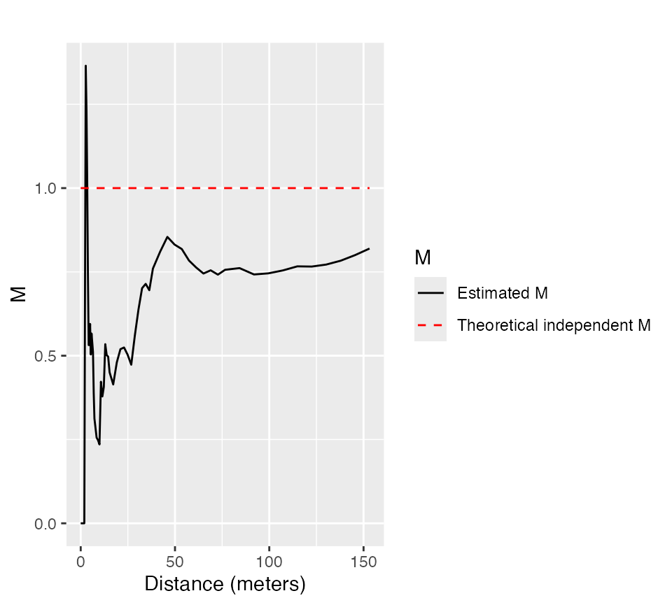
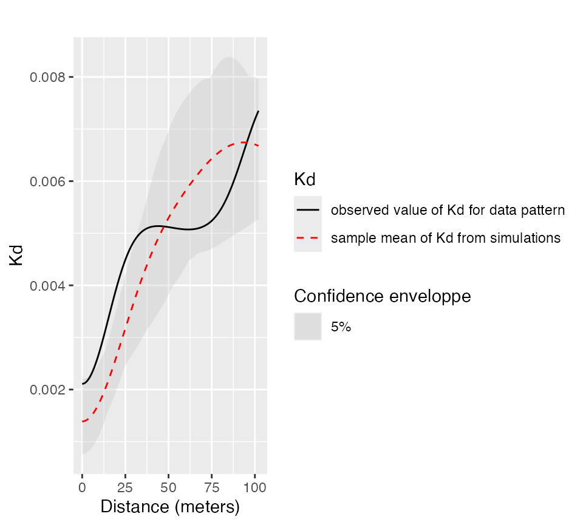

This vignette contains a quick introduction.
Data
The main data format is wmppp for weighted, marked point pattern. It inherits from the ppp class of the spatstat package.
A wmppp object can be created from the coordinates of points, their type and their weight.
library("dbmss")
# Draw the coordinates of 10 points
X <- runif(10)
Y <- runif(10)
# Draw the point types.
PointType <- sample(c("A", "B"), 10, replace=TRUE)
# Plot the point pattern. Weights are set to 1 ant the window is adjusted
par(mar=c(1,1,1,1))
plot(wmppp(data.frame(X, Y, PointType)), which.marks=2, main="")
An example dataset is provided: it is a point pattern from the Paracou forest in French Guiana. Two species of trees are identified, other trees are of type “Other”. Point weights are their basal area, in square centimeters.
data(paracou16)
# Plot (second column of marks is Point Types)
par(mar=c(1,1,1,1))
plot(paracou16, which.marks=2, leg.side="right", main="")

Main functions
The main functions of the packages are designed to calculate distance-based measures of spatial structure. Those are non-parametric statistics able to summarize and test the spatial distribution (concentration, dispersion) of points.
The classical, topographic functions such as Ripley’s K are provided by the spatstat package and supported by dbmss for convenience.
Relative functions are available in dbmss only. These are the \(M\) and \(m\) and \(K_d\) functions.
The bivariate \(M\) function can be calculated for Q. Rosea trees around V. Americana trees:
plot(Mhat(paracou16, , "V. Americana", "Q. Rosea"), main="")

Confidence envelopes
Confidence envelopes of various null hypotheses can be calculated. The univariate distribution of Q. Rosea is tested against the null hypothesis of random location.
plot(KdEnvelope(paracou16, , ReferenceType="Q. Rosea", Global=TRUE), main="")
## Generating 100 simulations by evaluating expression ...
## 1, 2, 3, 4, 5, 6, 7, 8, 9, 10, 11, 12, 13, 14, 15, 16, 17, 18, 19, 20, 21, 22, 23, 24, 25, 26, 27, 28, 29, 30, 31, 32, 33, 34, 35, 36, 37, 38, 39, 40,
## 41, 42, 43, 44, 45, 46, 47, 48, 49, 50, 51, 52, 53, 54, 55, 56, 57, 58, 59, 60, 61, 62, 63, 64, 65, 66, 67, 68, 69, 70, 71, 72, 73, 74, 75, 76, 77, 78, 79, 80,
## 81, 82, 83, 84, 85, 86, 87, 88, 89, 90, 91, 92, 93, 94, 95, 96, 97, 98, 99, 100.
##
## Done.

Significant concentration is detected between about 10 and 20 meters.